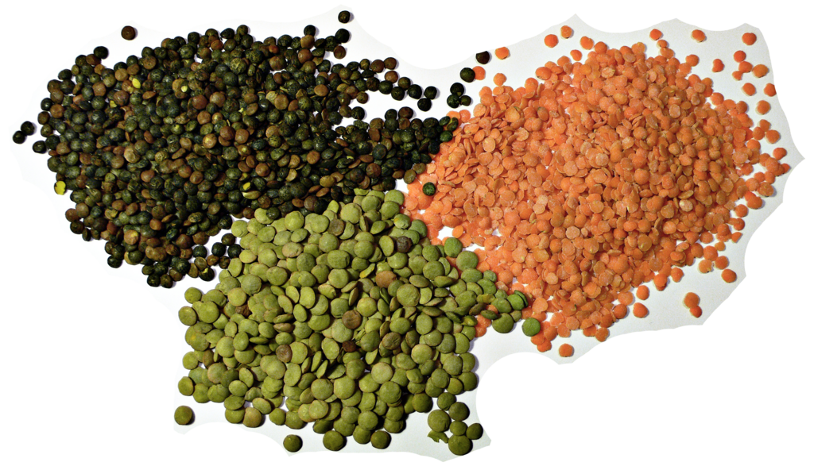

Home
Dal

Description
Today we are going to cook my another favourite recipe called Dal. There is no Bengali who didnt liked it. I I learned it from my mom and lets dive in to the cooking algorithm of it.
- Put pan to the stove.
- In another pot stir these ingredients: jira, pepper, salt, soyabin oil,lentils, tomato
- put some water in to them
- Make it cook for 15 minutes.
- Wait untill water get reduced
- Serve it